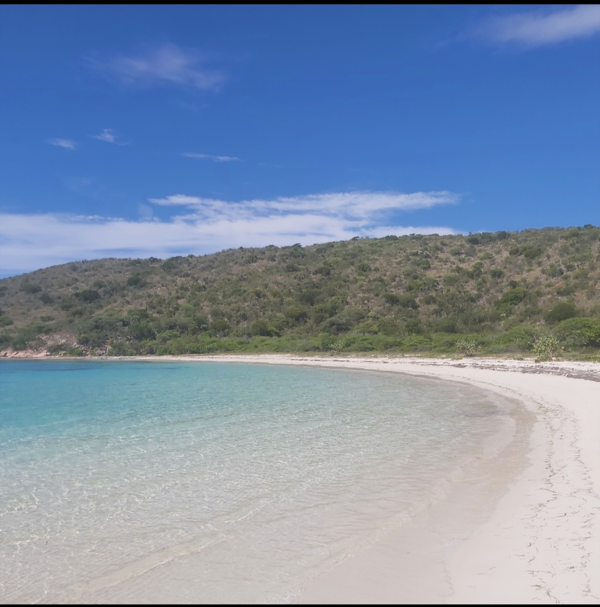

Imanol Arturo Matos Ramirez
About Me
My name is Imanol Matos, I enjoy listening to music, watching classical movies and playing the guitar. I like to play basketball and soccer, attending the church and seving others. I try to live a fitness life, this means that I do an effort to visit the gym every week. I love the beaches, nature photos and explore different cultures.
Dominican Republic
Dominican Republic is the center of the caribean islads, you can enjoy different activities here thanks to its culture and economy. The Dominican Republic combines beaches, mountains, rivers with people with a lot of charisma and a rich culure. Ready for dancing bachata or merengue? This country is the mother of these latin musical genres and a lot of surprises. This country is one of the first countries discovered by Columbus, you can visit the colonial zone and learn about the history of the region and eat delicious food.